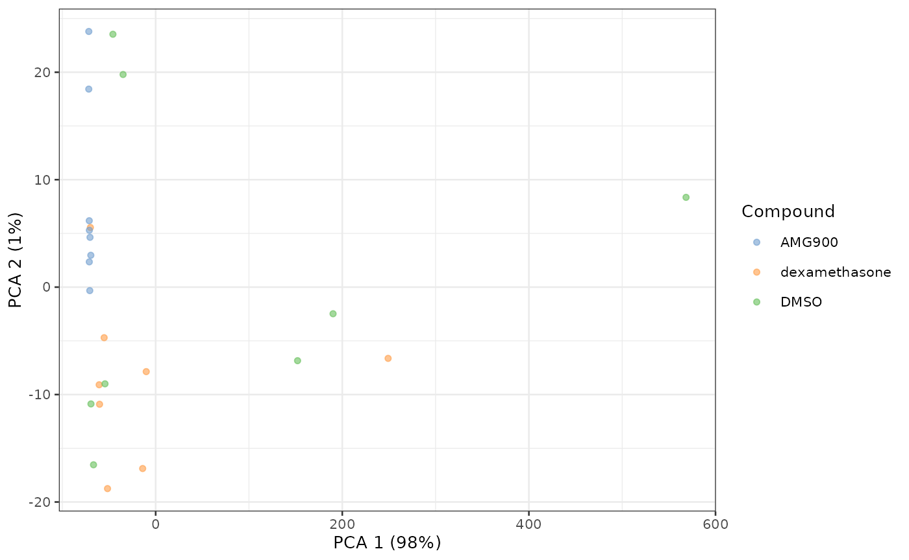
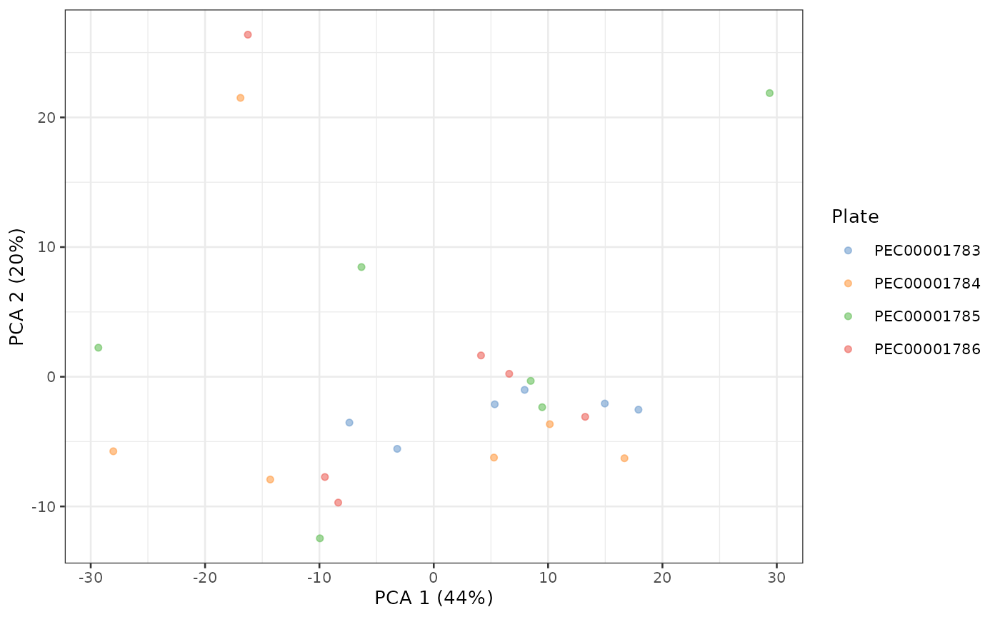
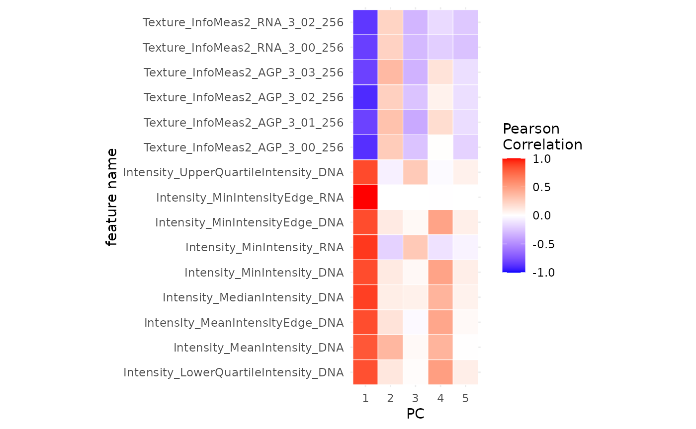
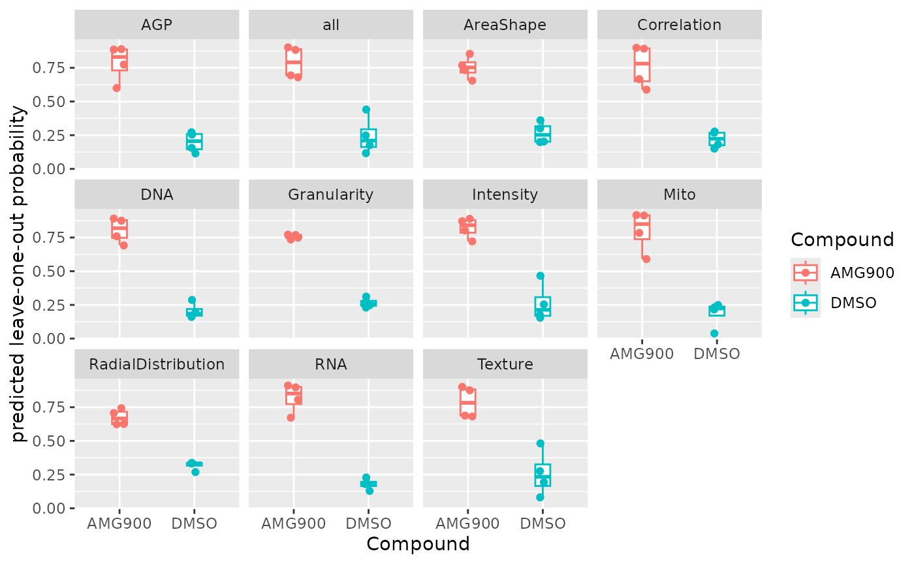
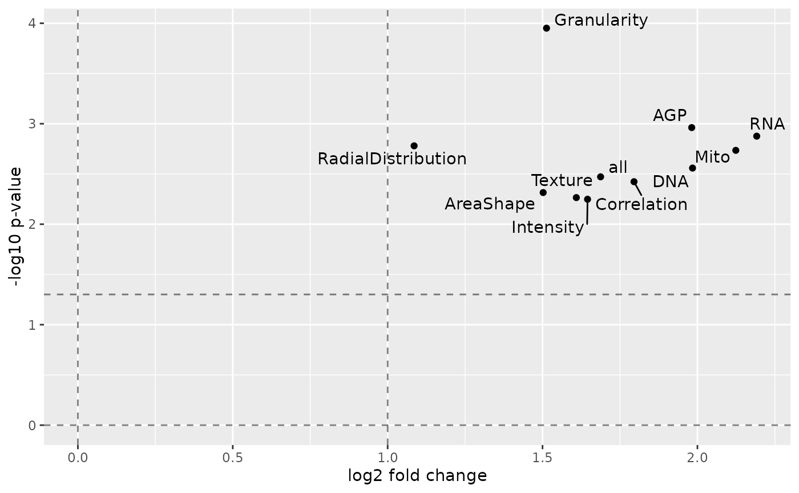
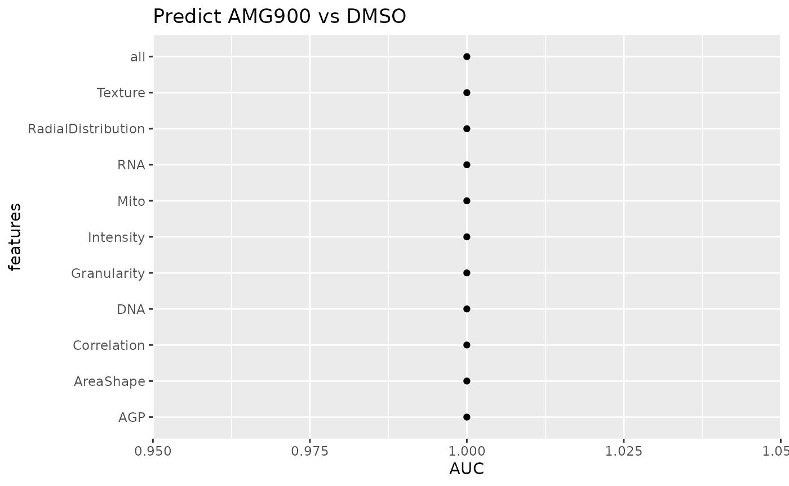
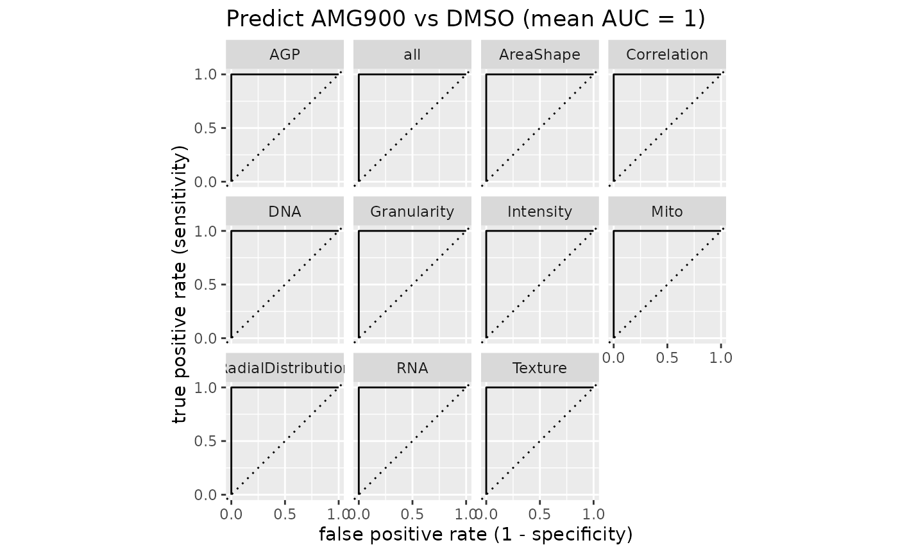
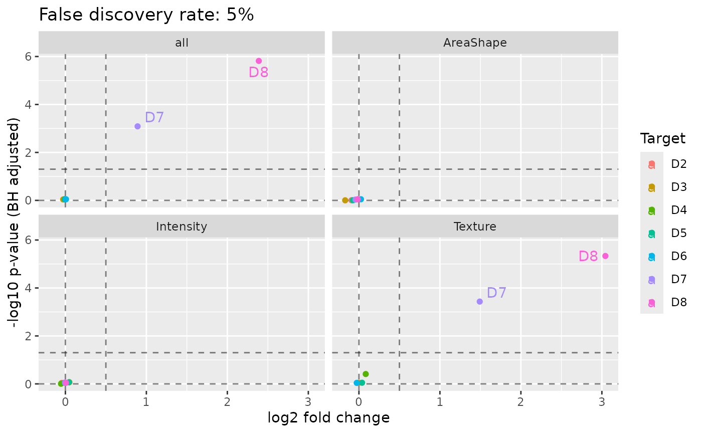

Perturbation analysis of Cell Painting data with cellpaintr
Christof Seiler
Center of Experimental Rheumatology, Department of Rheumatology, University Hospital Zurich, University of Zurich, SwitzerlandPhatthamon Laphanuwat
Center of Experimental Rheumatology, Department of Rheumatology, University Hospital Zurich, University of Zurich, SwitzerlandCaroline Ospelt
Center of Experimental Rheumatology, Department of Rheumatology, University Hospital Zurich, University of Zurich, Switzerland2026-11-21
Source:vignettes/cellpaintr-vignette.Rmd
cellpaintr-vignette.RmdIntroduction
High-content imaging measures the morphology of single cells in detail. In a Cell Painting experiment, cells are stained with dyes for several organelles, imaged, and segmented, and CellProfiler measures about 1,000 features of every cell: its size and shape, the intensity and texture of each stain, how the stains are distributed between the nucleus and the cell edge, and how two stains colocalize. Comparing these features between a perturbation, such as a drug, and a control shows whether and how the perturbation changes the cells.
cellpaintr is built for experiments with few biological replicates, such as patient-derived cells from a handful of donors. The cells are abundant, but the replicates are not, and the replicates, not the cells, are the independent units. cellpaintr therefore learns on cells and tests on replicates:
- For each replicate, a random forest trained on the cells of all other replicates scores the cells of the held-out replicate with the probability of the perturbed condition (pre-validation with replicates as folds). Every score comes from a model that never saw that replicate.
- A patient-level test compares the scores of the perturbed and the control cells of each replicate. Because the models of different held-out replicates are trained on each other’s cells, their scores are correlated, and an ordinary paired t-test is too liberal. cellpaintr offers an exact permutation test and two corrected t-tests.
- The test is repeated for interpretable feature groups, such as CellProfiler measurement types (intensity, texture, …) or imaging channels, and summarized in a volcano plot.
Profiling pipelines such as pycytominer aggregate single cells into
well-level profiles and compare profiles by their similarity. cellpaintr
instead trains on single cells, so it learns the direction of an effect
from the data, which makes it powerful when most cells shift, even
slightly, in many features, and it detects changes in the spread or
shape of a feature distribution that leave the means unchanged. A strong
response of a small subpopulation of cells, on the other hand, is
diluted in the mean score of a replicate; a location test on replicate
means, the standard patient-level analysis, detects such responses more
readily. It keeps the data in a SingleCellExperiment, so
that tools from Bioconductor single-cell workflows, such as
scater and scrapper, apply without
conversion.
Installation
if (!require("BiocManager", quietly = TRUE)) {
install.packages("BiocManager")
}
BiocManager::install("cellpaintr")Input data
What cellpaintr reads
cellpaintr reads the per-object table that CellProfiler’s
ExportToSpreadsheet module writes for the cells, usually called
MyExpt_Cells.csv, with one row per cell.
loadData() expects
- the column
ImageNumber, which identifies the image (site) of each cell, and usuallyObjectNumber; - image metadata columns whose names start with
Metadata_, such asMetadata_Plate,Metadata_Well,Metadata_Patient, andMetadata_Drug. CellProfiler adds them to the cell table with the option “Add image metadata columns to your object data file” of ExportToSpreadsheet; the plate layout (which drug and which patient are in which well) usually comes from a metadata file loaded with the Metadata module; - numeric measurement columns, such as
AreaShape_Area,Intensity_MeanIntensity_DNA, orTexture_Contrast_Mito_3_00_256. Their names follow CellProfiler’s convention<MeasurementType>_<Feature>_<Channel>_<Parameters>, which cellpaintr uses to form feature groups.
loadData() turns the Metadata_ columns,
without the prefix, together with ImageNumber,
ObjectNumber, and the cell centre coordinates
Location_Center_X, _Y, and _Z,
into the column data of the cells, and all other columns into the assay
features. If the metadata were exported only to the image
table (MyExpt_Image.csv), join them to the cells by
ImageNumber first:
Example data from the JUMP Cell Painting Consortium
The package ships a small subset of the JUMP Cell Painting dataset
(cpg0016), released under CC0 by the JUMP Cell Painting Consortium
through the Cell Painting Gallery. U2OS cells were stained for DNA
(Hoechst), RNA (SYTO 14), actin, Golgi, and plasma membrane (AGP), and
mitochondria (Mito), and imaged with brightfield as well. The subset
holds 240 cells from four compound plates of one batch: the negative
control DMSO and two of the eight JUMP positive controls, AMG900, an
Aurora kinase inhibitor with a strong effect on morphology, and
dexamethasone, a glucocorticoid with a weak one. For each plate and
compound, two random wells and, from each well, 10 random cells of one
random site were kept, with all CellProfiler measurements of the cell
compartment. The script
system.file("scripts", "make-jump-subset.R", package = "cellpaintr")
documents how the subset was made.
These data have no patients. Plates take their place as the replicates: every plate carries all three compounds, so the design is paired, as in a drug screen on patient-derived cells where every patient’s cells are imaged with and without each drug.
cell_file <- system.file("extdata", "jump_subset.csv.gz",
package = "cellpaintr"
)
sce <- loadData(cell_file)
sce## class: SingleCellExperiment
## dim: 1742 240
## metadata(0):
## assays(1): features
## rownames(1742): AreaShape_Area AreaShape_BoundingBoxArea ...
## Texture_Variance_RNA_5_02_256 Texture_Variance_RNA_5_03_256
## rowData names(0):
## colnames: NULL
## colData names(9): ImageNumber ObjectNumber ... Location_Center_Y
## Location_Center_Z
## reducedDimNames(0):
## mainExpName: NULL
## altExpNames(0):
table(sce$Compound, sce$Plate)##
## PEC00001783 PEC00001784 PEC00001785 PEC00001786
## AMG900 20 20 20 20
## dexamethasone 20 20 20 20
## DMSO 20 20 20 20Preprocessing
Cells and features
CellProfiler also exports columns that describe the segmentation rather than the cells, such as the number of child objects or the object numbers of the nearest neighbours. Remove them before modeling.
bookkeeping <- grepl(
"^(Parent|Children)_|ObjectNumber",
rownames(sce)
)
sce <- sce[!bookkeeping, ]Remove cells with missing measurements, features without spread, and features that are mostly zero, which often come from empty stains or failed measurements.
sce <- removeNAs(sce)
sce <- removeLowVariance(sce, robust = TRUE)
sce <- removeZeroInflation(sce, proportion = 0.2)
dim(sce)## [1] 1636 240In a full experiment, images with very few cells (out of focus, empty
wells) or very many cells (debris, clumps) are often of poor quality.
plotCellsPerImage() shows the number of cells per image,
and removeOutliers() removes the cells of images outside a
range. The example data keep only 10 cells of one site per well, so this
step does not apply here. Cell-level outliers can be removed with
scater, for example cells whose summed features lie more
than three median absolute deviations from the median.
plotCellsPerImage(sce)
sce <- removeOutliers(sce, min = 20, max = 300)
qc <- perCellQCMetrics(sce, assay.type = "features")
sce <- sce[, !isOutlier(qc$sum)]Transformation and scaling
CellProfiler features live on different scales: intensities are
positive and skewed, correlations are bounded by -1 and 1, and some
texture measures are proportions. transformScale()
transforms each family to an approximately unbounded, symmetric scale
(logarithm, Fisher’s z, logit, or a rank-based inverse normal
transformation), caps infinite values at the finite extremes of each
feature, and standardizes every feature, here with robust z-scores based
on the median and the median absolute deviation. The result is stored in
the new assay tfmfeatures.
sce <- transformScale(sce, robust = TRUE)
assayNames(sce)## [1] "features" "tfmfeatures"Plate effects
Plates often show gradients across rows and columns, for example from
evaporation at the edges. removeRowColEffect() fits Tukey’s
median polish to the median of each feature in each well and subtracts
the row and column effects from every cell. It needs the factors
Row and Col in the column data and many wells
per plate, so that row and column effects can be told apart from
compound effects. The example data have six wells per plate, so we skip
this step:
sce$Row <- factor(substr(sce$Well, 1, 1))
sce$Col <- factor(as.integer(substr(sce$Well, 2, 3)))
sce <- removeRowColEffect(sce)Note that in the JUMP layout the positive controls sit in the outer columns of every plate and DMSO in the next columns, so compound and plate position are confounded, and the same positional effect repeats on every plate. A comparison between them measures compound and position together. In your own experiments, randomize the positions of the conditions within each replicate.
Exploratory analysis
Single cells are noisy, so average the transformed features per well
(pseudo-bulk) with scrapper and look at the wells with a
principal component analysis from scater.
aggr <- scrapper::aggregateAcrossCells(
assay(sce, "tfmfeatures"),
factors = colData(sce)[, c("Plate", "Well", "Compound")]
)
sce_wells <- SingleCellExperiment(
assays = list(means = t(t(aggr$sums) / aggr$counts)),
colData = DataFrame(aggr$combinations, ncells = aggr$counts)
)
sce_wells <- runPCA(sce_wells,
exprs_values = "means", ncomponents = 10, scale = TRUE
)
plotReducedDim(sce_wells, dimred = "PCA", colour_by = "Compound")
plotReducedDim(sce_wells, dimred = "PCA", colour_by = "Plate")
We scale the well means before the PCA (scale = TRUE).
Robust z-scores divide by the median absolute deviation, which is close
to zero for some features, such as the minimum intensity at the cell
edge, so a few cells get extreme values that would otherwise dominate
the first principal component. The random forests below are not
affected, because trees do not depend on the scale of a feature.
If the wells separate by compound, the compounds change the cells; if
they separate by plate, there are batch effects between plates.
plotPCACor() shows the features most correlated with a
principal component, here the first one.
plotPCACor(sce_wells, filter_by = 1, top = 15, assay_type = "means")
For larger experiments, a nonlinear embedding such as UMAP can show
groups of wells or cells that the first principal components miss, for
example with
scater::runUMAP(sce_wells, exprs_values = "means") followed
by scater::plotUMAP(sce_wells, colour_by = "Compound").
Testing a perturbation
Pre-validated scores
predictLOO() compares two levels of a condition
(target) with the replicates (group) as the
folds of the leave-one-out cross-validation. For each plate, it trains a
random forest on the cells of the other plates to tell AMG900 from DMSO,
and scores the cells of the held-out plate with the probability of
AMG900. It does this for all features together and for each feature
group: measurement types, given by the prefix of the feature names, and
channels, given by any part of them.
types <- c(
"AreaShape", "Intensity", "Texture", "RadialDistribution",
"Granularity", "Correlation"
)
channels <- c("DNA", "RNA", "AGP", "Mito")
set.seed(23)
sce_amg900 <- predictLOO(
sce,
target = "Compound", group = "Plate",
interest_level = "AMG900", reference_level = "DMSO",
types = types, channels = channels,
n_threads = 1, progress = FALSE
)
reducedDim(sce_amg900, "prevalidated")[1:3, 1:4]## all AreaShape Intensity Texture
## [1,] 0.53989921 0.95217937 0.76144841 0.39464127
## [2,] 0.03507063 0.31321508 0.04872857 0.01743730
## [3,] 0.01468730 0.07980873 0.04454127 0.02336667plotLOO() shows the scores averaged per plate and
compound, one panel per feature group. If the compound changes the
cells, the AMG900 cells of every plate score higher than the DMSO cells
of the same plate.
plotLOO(sce_amg900, target = "Compound", group = "Plate")
Patient-level tests
calculateStats() averages the scores per replicate and
condition, takes the difference
for each replicate
,
and computes the one-sided paired t-statistic for higher scores in the
perturbed condition. It reports, for each feature group, the
fold change of the mean scores and a p-value from one of three
calibrations.
The permutation test (the default) swaps the
conditions of whole replicates, refits all models for every relabeling,
and compares the observed statistic with those of the relabelings. It is
exact. Swapping the conditions of all replicates at once gives the same
statistic, so one replicate keeps its labels: with
replicates there are
relabelings, and the smallest attainable p-value is
,
here
with four plates. The test refits all models for every relabeling, so it
takes
times as long as predictLOO().
set.seed(23)
stats_permutation <- calculateStats(sce_amg900,
target = "Compound", group = "Plate"
)## Permutation test with all 8 relabelings of 4 levels of 'Plate' (paired design); smallest attainable p-value 1/8.## 'PEC00001783' keeps its labels, because exchanging the two levels of 'Compound' in all levels of 'Plate' at once gives the same statistic.
stats_permutation## Target Feature pvalue log2FoldChange
## 1 AMG900 all 0.125 1.687456
## 2 AMG900 AreaShape 0.125 1.502036
## 3 AMG900 Intensity 0.125 1.645348
## 4 AMG900 Texture 0.125 1.609109
## 5 AMG900 RadialDistribution 0.125 1.085425
## 6 AMG900 Granularity 0.125 1.512864
## 7 AMG900 Correlation 0.125 1.795352
## 8 AMG900 DNA 0.125 1.984275
## 9 AMG900 RNA 0.125 2.191455
## 10 AMG900 AGP 0.125 1.981563
## 11 AMG900 Mito 0.125 2.12390711 of the 11 feature groups reach the smallest attainable p-value, 1/8: the observed labels give the largest statistic of all relabelings. With four replicates, no permutation p-value can be smaller, however strong the effect, and none can pass a Bonferroni threshold over several feature groups.
The corrected t-test needs no refits. Every replicate is in the training set of every other replicate’s model, so the score differences of different replicates are positively correlated, and the ordinary t-statistic is too large. If each score difference is a sum of pairwise interactions with the other replicates, it is too large by the factor , about 1.73 with four replicates; the corrected t-test divides by it. Its p-values are not limited to multiples of , but it is approximate.
stats_corrected <- calculateStats(sce_amg900,
target = "Compound", group = "Plate", method = "corrected"
)
stats_corrected## Target Feature pvalue log2FoldChange
## 1 AMG900 all 0.0033757533 1.687456
## 2 AMG900 AreaShape 0.0048405582 1.502036
## 3 AMG900 Intensity 0.0056425419 1.645348
## 4 AMG900 Texture 0.0054327342 1.609109
## 5 AMG900 RadialDistribution 0.0016595829 1.085425
## 6 AMG900 Granularity 0.0001119539 1.512864
## 7 AMG900 Correlation 0.0037737065 1.795352
## 8 AMG900 DNA 0.0027620416 1.984275
## 9 AMG900 RNA 0.0013298322 2.191455
## 10 AMG900 AGP 0.0010922414 1.981563
## 11 AMG900 Mito 0.0018398816 2.123907The corrected p-values range from 0.00011 to 0.00560, below the floor of the permutation test.
The Nadeau-Bengio correction divides by the smaller factor of the corrected resampled t-test of Nadeau and Bengio (2003). It has more power when part of each score difference is independent of the other replicates, for example noise from the random seeds of the forests, but with four to six replicates it can exceed the nominal level when the score differences consist mostly of interactions.
stats_nadeau_bengio <- calculateStats(sce_amg900,
target = "Compound", group = "Plate", method = "nadeau_bengio"
)
stats_nadeau_bengio## Target Feature pvalue log2FoldChange
## 1 AMG900 all 2.354837e-03 1.687456
## 2 AMG900 AreaShape 3.392058e-03 1.502036
## 3 AMG900 Intensity 3.963125e-03 1.645348
## 4 AMG900 Texture 3.813520e-03 1.609109
## 5 AMG900 RadialDistribution 1.150372e-03 1.085425
## 6 AMG900 Granularity 7.692692e-05 1.512864
## 7 AMG900 Correlation 2.635846e-03 1.795352
## 8 AMG900 DNA 1.922682e-03 1.984275
## 9 AMG900 RNA 9.204738e-04 2.191455
## 10 AMG900 AGP 7.551798e-04 1.981563
## 11 AMG900 Mito 1.276300e-03 2.123907method = "t" takes p-values from the t-distribution
without correction. It is fast but too liberal, and is meant for ranking
many comparisons, not for inference.
Summaries
The volcano plot shows one point per feature group, with the fold change against the p-value. By default, groups beyond a Bonferroni threshold of for feature groups and a fold change of 1 are labeled. With four replicates, the permutation test cannot reach this threshold, so we use the corrected t-test and a threshold of 0.05.
volcanoPlot(sce_amg900,
target = "Compound", group = "Plate",
stats = stats_corrected, p_cutoff = 0.05
)
ROC curves and areas under the curve (AUC) describe how well the
scores of each feature group separate the two conditions. Both use the
mean score of each replicate and condition, here eight points per
feature group (four plates times two compounds), so an AUC of 1 means
that every AMG900 mean score lies above every DMSO mean score, whichever
plate they come from. The AUC is a descriptive summary; the tests of
calculateStats() instead compare the conditions within each
replicate.
plotAUC(sce_amg900, target = "Compound", group = "Plate")
plotROC(sce_amg900, target = "Compound", group = "Plate")
A weak effect
Dexamethasone changes U2OS cells much less than AMG900. With few replicates and cells, its scores barely separate from DMSO.
set.seed(23)
sce_dex <- predictLOO(
sce,
target = "Compound", group = "Plate",
interest_level = "dexamethasone", reference_level = "DMSO",
types = types, channels = channels,
n_threads = 1, progress = FALSE
)
stats_dex <- calculateStats(sce_dex,
target = "Compound", group = "Plate", method = "corrected"
)
stats_dex## Target Feature pvalue log2FoldChange
## 1 dexamethasone all 0.90168452 -0.197356390
## 2 dexamethasone AreaShape 0.02276238 0.144405946
## 3 dexamethasone Intensity 0.97472932 -0.361695191
## 4 dexamethasone Texture 0.91446561 -0.259349373
## 5 dexamethasone RadialDistribution 0.27339502 0.069529211
## 6 dexamethasone Granularity 0.77807214 -0.058687876
## 7 dexamethasone Correlation 0.44216536 0.009603795
## 8 dexamethasone DNA 0.67034298 -0.033325508
## 9 dexamethasone RNA 0.45885386 0.021194480
## 10 dexamethasone AGP 0.71175296 -0.060432863
## 11 dexamethasone Mito 0.53803102 -0.011598197The smallest p-value, 0.023, does not pass a Bonferroni threshold of over the feature groups. Detecting weak effects needs more replicates; the cells per replicate help only as far as they sharpen each replicate’s score difference.
Run time and parallel computing
predictLOO() fits one forest per replicate and feature
group, and n_threads sets the number of threads of each
fit. The permutation test refits these forests for every relabeling. The
relabelings can run in parallel with the future framework: set a plan
before calling calculateStats(). Keep the product of the
number of workers and n_threads at or below the number of
cores.
future::plan(future::multisession, workers = 4)
stats <- calculateStats(sce_amg900, target = "Compound", group = "Plate")
future::plan(future::sequential)A drug screen with simulated data
generateData() simulates a small CellProfiler table with
1,000 cells from six patients and eight drugs, with 10 shape, 10
intensity, and 10 texture features named as in real CellProfiler output.
Drugs D7 and D8 shift the texture features; D1 is the control. Every
drug is compared with the control, and the p-values of all comparisons
and feature groups are adjusted together.
set.seed(23)
sce_sim <- loadData(generateData())
sce_sim <- transformScale(sce_sim, robust = TRUE)
sce_sim$Drug <- relevel(as.factor(sce_sim$Drug), ref = "D1")
types_sim <- c("AreaShape", "Intensity", "Texture")
sce_list <- map(setdiff(levels(sce_sim$Drug), "D1"), function(drug) {
predictLOO(
sce_sim,
target = "Drug", group = "Patient",
interest_level = drug, reference_level = "D1",
types = types_sim, n_threads = 1, progress = FALSE
)
})For a quick screen of many drugs, the corrected t-test needs no refits. Its p-values are adjusted with the Benjamini-Hochberg procedure over all drugs and feature groups.
p_adj_cutoff <- 0.05
fc_cutoff <- 0.5
tb_stats <- lapply(sce_list, calculateStats,
target = "Drug", group = "Patient", method = "corrected"
) |>
bind_rows() |>
mutate(pvalue_adj = p.adjust(pvalue, method = "BH")) |>
mutate(Selection = ifelse(
pvalue_adj < p_adj_cutoff & log2FoldChange > fc_cutoff,
Target, ""
))
tb_stats |>
ggplot(aes(log2FoldChange, -log10(pvalue_adj), label = Selection)) +
geom_vline(
xintercept = c(0, fc_cutoff), alpha = 0.5, linetype = "dashed"
) +
geom_hline(
yintercept = c(0, -log10(p_adj_cutoff)), alpha = 0.5,
linetype = "dashed"
) +
geom_point(aes(color = Target)) +
geom_text_repel(aes(color = Target), max.overlaps = Inf) +
xlab("log2 fold change") +
ylab("-log10 p-value (BH adjusted)") +
facet_wrap(~Feature) +
ggtitle(paste0("False discovery rate: ", 100 * p_adj_cutoff, "%"))
Session information
## R version 4.5.3 (2026-03-11)
## Platform: x86_64-pc-linux-gnu
## Running under: Ubuntu 26.04.1 LTS
##
## Matrix products: default
## BLAS: /usr/lib/x86_64-linux-gnu/openblas-pthread/libblas.so.3
## LAPACK: /usr/lib/x86_64-linux-gnu/openblas-pthread/libopenblasp-r0.3.32.so; LAPACK version 3.12.0
##
## locale:
## [1] LC_CTYPE=C.UTF-8 LC_NUMERIC=C LC_TIME=C.UTF-8
## [4] LC_COLLATE=C.UTF-8 LC_MONETARY=C.UTF-8 LC_MESSAGES=C.UTF-8
## [7] LC_PAPER=C.UTF-8 LC_NAME=C LC_ADDRESS=C
## [10] LC_TELEPHONE=C LC_MEASUREMENT=C.UTF-8 LC_IDENTIFICATION=C
##
## time zone: UTC
## tzcode source: system (glibc)
##
## attached base packages:
## [1] stats4 stats graphics grDevices utils datasets methods
## [8] base
##
## other attached packages:
## [1] future_1.82.0 ggrepel_0.9.8
## [3] dplyr_1.2.1 purrr_1.2.2
## [5] scrapper_1.4.0 scater_1.38.1
## [7] ggplot2_4.0.4 scuttle_1.20.0
## [9] cellpaintr_0.99.7 SingleCellExperiment_1.32.0
## [11] SummarizedExperiment_1.40.0 Biobase_2.70.0
## [13] GenomicRanges_1.62.1 Seqinfo_1.0.0
## [15] IRanges_2.44.0 S4Vectors_0.48.1
## [17] BiocGenerics_0.56.0 generics_0.1.4
## [19] MatrixGenerics_1.22.0 matrixStats_1.5.0
## [21] BiocStyle_2.38.0
##
## loaded via a namespace (and not attached):
## [1] gridExtra_2.3.1 rlang_1.3.0 magrittr_2.0.5
## [4] furrr_0.4.0 otel_0.3.0 compiler_4.5.3
## [7] systemfonts_1.3.3 vctrs_0.7.3 stringr_1.6.0
## [10] crayon_1.5.3 pkgconfig_2.0.3 fastmap_1.2.0
## [13] XVector_0.50.0 labeling_0.4.3 rmarkdown_2.32
## [16] tzdb_0.5.0 ggbeeswarm_0.7.3 ragg_1.5.2
## [19] bit_4.6.0 xfun_0.62 cachem_1.1.0
## [22] beachmat_2.26.0 jsonlite_2.0.0 DelayedArray_0.36.1
## [25] BiocParallel_1.44.0 irlba_2.4.1 parallel_4.5.3
## [28] R6_2.6.1 bslib_0.12.0 stringi_1.8.9
## [31] rsample_1.3.2 RColorBrewer_1.1-3 ranger_0.18.0
## [34] parallelly_1.50.0 jquerylib_0.1.4 Rcpp_1.1.2
## [37] bookdown_0.48 knitr_1.52 future.apply_1.21.0
## [40] readr_2.2.0 Matrix_1.7-4 tidyselect_1.2.1
## [43] abind_1.4-8 yaml_2.3.12 viridis_0.6.5
## [46] codetools_0.2-20 listenv_1.1.0 lattice_0.22-9
## [49] tibble_3.3.1 withr_3.0.3 S7_1.0.0
## [52] evaluate_1.0.5 desc_1.4.3 pillar_1.11.1
## [55] BiocManager_1.30.27 vroom_1.7.1 hms_1.1.4
## [58] scales_1.4.0 globals_0.20.0 glue_1.8.1
## [61] tools_4.5.3 BiocNeighbors_2.4.0 ScaledMatrix_1.18.0
## [64] fs_2.1.0 grid_4.5.3 yardstick_1.5.0
## [67] tidyr_1.3.2 beeswarm_0.4.0 BiocSingular_1.26.1
## [70] vipor_0.4.7 cli_3.6.6 rsvd_2.0.0
## [73] textshaping_1.1.0 parsnip_1.6.1 S4Arrays_1.10.1
## [76] viridisLite_0.4.3 gtable_0.3.6 sass_0.5.0
## [79] digest_0.6.39 SparseArray_1.10.10 farver_2.1.2
## [82] htmltools_0.5.9 pkgdown_2.2.1 lifecycle_1.0.5
## [85] hardhat_1.4.3 sparsevctrs_0.4.0 bit64_4.8.6